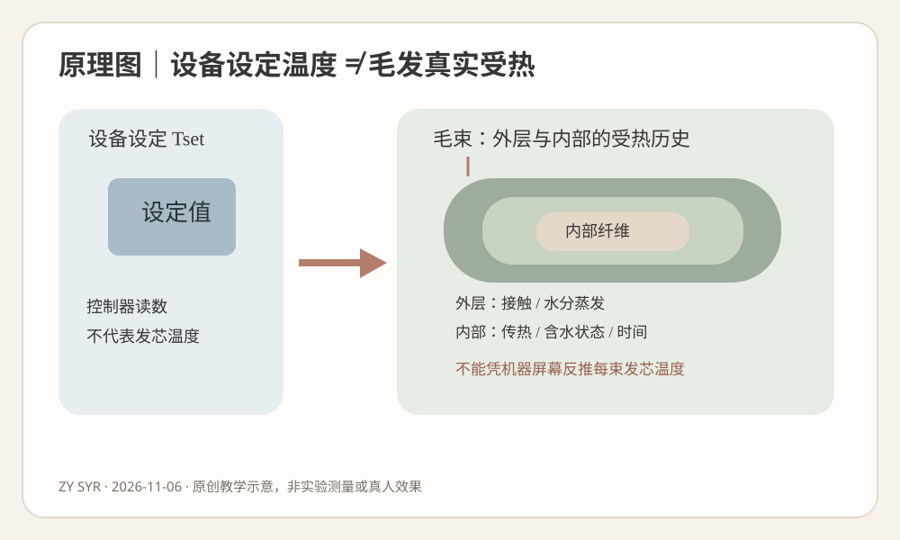
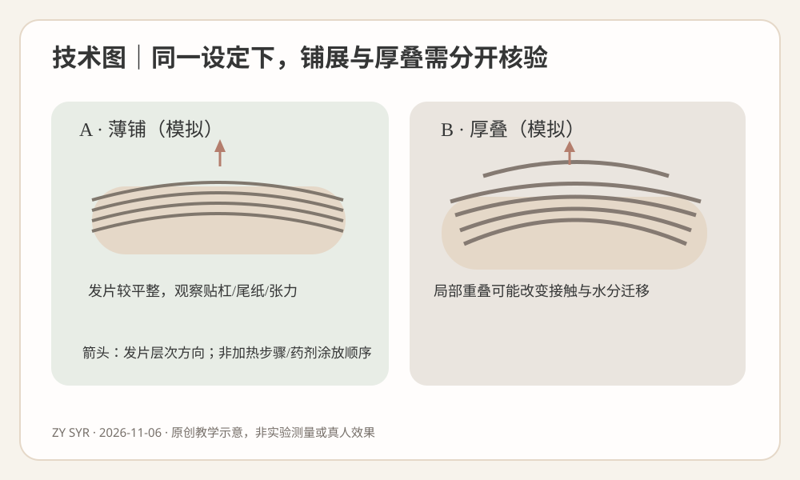
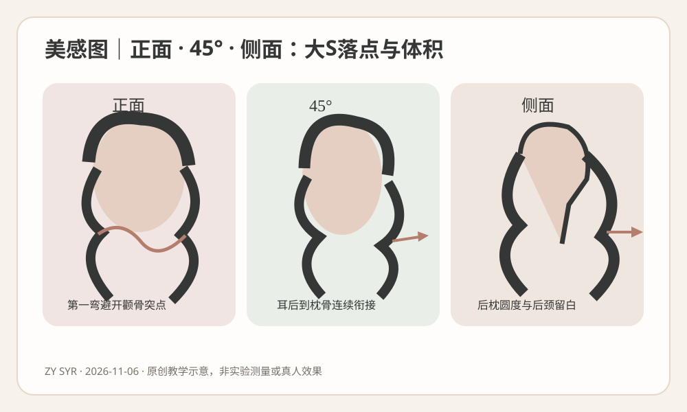

2026-11-06
【新增判断能力】把机器设定温度、毛束表面受热、纤维内部经历的温度—时间—水分过程分开；不要再用设备屏幕上的数字代替毛发实测温度。上一课关注旧漂染暗的化学历史，今天集中研究热处理实际暴露。
【毛发结构】外层毛鳞片参与保护、摩擦和物质传递；内部皮质层含角蛋白中间丝及基质蛋白，决定重要的拉伸、弯曲和恢复特性。部分毛发存在髓质。二硫键是角蛋白中较持久的共价交联；氢键对复湿和吹整敏感；盐键/离子相互作用与疏水相互作用同样参与力学稳定。它们不是同一类键，也不能从头发是否发热估计断键比例。
【还原与氧化】合适的TGA等还原体系在厂商规定的配方、pH、浓度、时间和毛发状态下改变部分可接近的二硫键；完整配套氧化参与部分共价交联重新形成，帮助形态稳定。氧化不能消除严重损伤，也不能代替正确卷绕和温控。CA若是门店产品简称，须先核对实际有效成分；相同pH不等于相同药力，“软化60%”只能作为门店经验表达，不是二硫键断裂的测量百分比。
【卷绕、水和张力】发片厚度、杠径、尾纸、卷入圈数、提升角与张力，形成几何约束。水分改变氢键网络及角蛋白基质的塑化与黏弹性；不同区域的初始湿态、接触方式、蒸发速度可能不同。发片厚叠也许改变受热路径，但不能只看厚薄就断言内部温度一定高或低，更不能断言内部药剂未到位。
【设定温度≠毛发温度】控制器显示的是设备测量/控制位置对应的设定或反馈，并非每根发丝的实测温度。毛束外层与内部的热传递受接触、时间、初始含水、层叠以及散热影响，温度历程未必一致。干燥过程中水分迁移与蒸发还能影响热响应。没有经过验证的发芯传感器测量，不能宣称“里面已经达到屏幕温度”；也不能凭触感猜测准确发芯温度。
【温度、时间与结构松弛】受控加热可影响水分迁移、分子运动、黏弹性和结构松弛；不当热暴露可能损伤皮质层与毛鳞片。玻璃化相关行为描述角蛋白基质随温度和水分变化的分子运动，不等于烫发机安全设定值。冷却只是温度回落，不等于后续氧化。局部卷度弹性与持久性取决于原发化学历史、还原/氧化、几何卷绕、水分、热历程和多次洗后的恢复；不是显示温度越高越好。
【异常停止信号】旧漂发尾、反复染后中段和健康新生区分开评估。湿态异常伸长、发黏、撤力恢复差、断丝、头皮异常灼热或刺激，均应停止相关高风险操作并重新评估。不能通过延长加热或增加张力补救。
【检索说明】优先检索2026-10-30至2026-11-06最近7天毛发热处理研究，未核验到能直接规定某款真人热烫机最佳温度、发芯热暴露或厚发片加热分钟数的可靠新对照试验。选用2026新近原始热分析、2024年毛发内部光学研究和2019年热损伤研究。研究不是营销配方。
【证据一】Yamada、Kageshima、Nishimoto，《Thermal Analysis of Human Hair》，2026-09-05出版、2026-10-17上线J-STAGE，原始TG/TMA材料实验。核心结论：不同物理处理后可观察到水分状态、毛鳞片及黏弹性变化。强度中：有仪器数据，但样本、处理和企业联合作者限制外推。能支持记录水分、热历史；不能证明热烫机器设定值等于发芯温度，或推荐真人参数。
【证据二】Watanabe等，《Optical evaluation of internal damage to human hair based on second near-infrared window polarization microscopy》，2024-05-27，原始近红外偏振显微实验。核心结论：在特定受控加热及干湿条件下能观察不同内部变化。强度中：仪器直接观测，但条件不是沙龙热烫。能支持水分与加热时间需分开；不能直接套用实验中高温、时长或损伤强度。
【证据三】Lima等，《Heat-damaged evaluation of virgin hair》，2019-03-12，原始热夹板材料实验。核心结论：特定热暴露下观察到毛鳞片和角蛋白相关变化。强度中：TG/FTIR/SEM多方法，样本量及设备差异限制泛化。能支持不当热处理可能造成结构损伤；不能把热夹板数据换算为烫杠安全温度。
【来源分层】科研解释机制；具体产品厂家完整技术资料决定是否允许热处理、温度/时长、含水条件、冷却及氧化顺序；专业教材提供原则和术语；以下门店参数仅供无药无热公仔头几何训练。任何厂家数值未提供时不得伪造。
【模拟教学案例｜非真实顾客】33岁女性，气质偏职场知性、喜欢松弛法式大S。脸为偏长方圆型、颧骨中等、下颌略宽；头顶略平、后枕饱满，颈部偏短、肩宽中等。现有锁骨下约8厘米中长发，低层次、后颈底线偏重。顶部发量中等且发径细软，两侧中等，后枕密度高、发径粗硬；右耳后天然外向毛流、后颈轻自然S。新生发约7厘米，中段一年内两次染棕，末端约3—4厘米曾漂浅后染暗，平日常用夹板，两天洗一次，每天愿意花五分钟吹整。
【顾客参考图和真正需求】图中顶部轻C、下颌稍下第一弯、锁骨附近一条宽松S、后颈不堆积。顾客说“要自然、不要太卷、显脸小；希望干了像照片一样”。照片可能经过专业吹整，先追问要自然干还是愿意五分钟整理。与前一课呼应：末端虽染深，仍应逐区确认化学历史，不以颜色判定耐受。
【诊断】最大风险是顶部薄发片与后枕厚发片按同一屏幕设定操作后，发型师就宣称它们内部温度相同，甚至为追求统一卷度擅自追加加热。首先分别记录发片厚度、初始湿态、发径、天然毛流和既往损伤；严查旧漂段湿态异常失弹、发黏、断丝；有异常则停止处理并改设计。不能将粗硬一词直接等同可增加热量。
【八步设计】①主风格职场知性兼自然浪漫；②人物曲直与中等量感、平顶短颈；③以自然干实际底线和安全有效长度为准；④顶柔C、耳后不炸、后颈清爽；⑤后枕/侧后低至中低层次释放过密重量，保留耳前发量；⑥偏分刘海可弱C或不卷；⑦下颌以下第一弯，锁骨附近主要松S，旧漂段不安全时退为单C；⑧说明自然干与五分钟轻吹差别。
【剪裁】顶部细软区保留密度，不为体积过度削薄；两侧保留底线，后颈适当去除重叠重量但不剪空。后枕原有圆度不需无限再补。修剪后重新测量安全有效发长、重新决定S数量；不拿更小杠径弥补长度不足。
【药剂选择/涂放/终点】只有实际厂家明确允许相应发质与设备配套的TGA等完整热烫体系才可评估；CA需确认成分，冷烫与所谓快速烫不可跨体系套用。具体pH、药力、涂放先后、规定作用时长、软化观察和停止条件，以选定厂家文件与现场耐受为准；未提供品牌型号，因此本案例不编造数值。按新生/染后/旧漂分区记录首次接触与实际停止时间；手感“软化百分比”不是化学断键比例。
【冲水、含水与分片】按实际产品技术说明冲水；记录滴水、均匀湿润或局部偏干等可观察等级，不能将其称为精确含水率。发片铺平、尾纸平顺、张力温和，避免厚叠与尾端折返；右耳后顺毛流试排。厚片和薄片的受热可能不同，只能作为核查假设，不能直接推导温度或药剂扩散。
【热/时间/干燥/氧化】机器设定值、时间、允许初始湿度、设备接触与防烫条件、干燥/冷却/氧化顺序全部依真实厂家说明。没有批准的纤维温度测量装置，不做发芯温度承诺。出现异常灼热、刺激、发黏或断丝立即停止；不靠补热、补药矫正卷向。完整氧化也无法修复严重损伤。
【成品与复盘】预期顶部轻C、颧骨旁不过宽、下颌以下柔弯、锁骨附近主S、耳后与枕骨顺畅、后颈清爽。交付时正面/45度/侧面分别看自然干与同样五分钟整理。若后枕卷度不均，先查化学史、发片厚度、卷绕、含水观察、热程序与整理条件；补救优先低风险修剪/吹整，不默认重烫。
【人物视觉变量】不要让“热烫更卷”替代美感设计。对于本案偏长方圆脸、平顶、短颈，顶部可适度增高但不可过高；颧骨最宽位置避免最强横向外扩，第一柔弯从下颌稍下出现，最明显松S放在锁骨附近；耳后与后枕保持连续，后颈释放多余重量，形成合适肩颈留白。最大蓬松点、第一弯、最强卷度和底线是四个可分开的标记。
【正面】确认左右最大宽度的位置，是否在颧骨或下颌突然鼓起；顶部支撑是否拉长脸。并看耳前密度是否足够，不为了轻盈无限去量。
【45度】确认太阳穴—耳后—枕骨流线，右耳后外向毛流是否形成独立鼓包；技术可以左右非镜像，目的是整体视觉平衡。不能把外向毛流直接归因于加热不足。
【侧面】后枕已圆，不继续堆卷；颈部偏短，适当保留后颈留白，避免卷度与重量同时落在肩部最低点。
【不同人物】长脸窄肩可能需要保留侧发的适当宽度，圆脸短颈宽肩可能需要侧后体积控制；发量少应保留底线密度。没有唯一脸型公式。
【图一：原理】屏幕设定温度指向毛束受热条件；外层接触、内层温度历程、水分蒸发是不同变量。看箭头：“控制器设定值”不能直接推论“纤维内部实时温度”。
【图二：技术】同一根软杠上，薄铺与厚叠的发片空间不同。看发片边界、尾纸、张力和卷向；箭头只表示铺展方向，不是药剂涂放或温度设定。
【图三：美感】同一虚构人物的正面/45度/侧面。看颧骨以下第一弯、耳后到枕骨衔接、后颈留白及最大体积。三图均为原创轻量SVG教学示意，不是真人效果或温度测量证据。



【练习限定】下列是公仔头无药剂、无加热的几何候选，杠径为外径，提升角以局部头皮切线0°计；不能转为真人热烫参数。建议顶部杠径30—34毫米/提升20—40°，枕骨上部28—32毫米/15—35°，两侧30—36毫米/10—30°，后颈可不卷/0—15°，刘海脸周依据有效发长与根向选择不卷或弱C。数字只为示教比较，未经门店验证。
【顶部】先看自然分缝、根向、顶部轻C与支撑高度；压根先查杠位和夹点，炸根先查提升方向与根向，不靠强张力制造高度。
【枕骨】本案原有圆度，优先平顺衔接顶部和侧后；厚片要平整铺展，观察第一弯高度是否连续。厚叠不是补药补热的证据。
【左右两侧】下颌稍下出现第一弯，锁骨附近松S；右耳后天然外向，可以试不同杠轴而非机械镜像；圈数取决于安全有效发长、杠径与实际绕行路径。检查尾纸和局部张力。
【后颈】短颈和密发可选择不卷，若做无药轻C练习须顺根向，避免根部折点与肩颈堆积。
【刘海脸周】根据额角发旋和分缝弱C或不卷，细软碎发不强拉，第一弯避开需收紧的颧骨位置。
【七类纠错】压根→落杠/夹具；炸根→提升/根向；折痕→尾纸/夹点/张力；尾翘→发尾折返/卷向；断层→相邻第一弯落点；流向冲突→杠轴交界和天然毛流；后颈堆积→层次/重量/圈数。今天增加：卷度不一致先核对发片厚薄与设备规定的程序，不直接推测“里面没热透”。
【先问五题】①“你说自然，是自然干就有松S，还是可以轻吹五分钟？”②“不要太卷，是不想要小密卷，还是第一弯也希望非常淡？”③“显脸小最想调整颧骨、下颌，还是耳后与后颈？”④“过去漂染烫和夹板历史在哪些长度？有没有断丝、发黏？”⑤“参考图是造型后的，你能接受自然干与整理后有差异，以及安全长度不足时减少一道S吗？”
【模拟对话】顾客：“热烫机器温度都一样，为什么后面不如两边卷？” 发型师：“屏幕显示的是设备设置，并不直接代表每束头发内部的温度。我们先看后枕发量、发片厚薄、毛流和以往漂染史，不能只凭卷松判断需要提高温度。” 顾客：“那后面多烫一会儿？” 发型师：“不能自行延长。我们会遵守这套产品和机器的完整说明；如果发尾耐受不足，得先调整方案。” 顾客：“我主要想自然、显脸小。” 发型师：“那第一弯放下颌以下，颧骨旁不过度变宽，后颈保持清爽，比单独追求更卷重要。” 顾客：“洗完一样吗？” 发型师：“会把自然干与五分钟轻吹的效果分开展示，照片里的卷度不等于你的洗后效果保证。”
【可复制话术】“机器显示温度不能代表每根发丝的内部温度，毛束厚薄、含水状态和既往处理历史都会影响实际响应。我们先看你的发质安全，再从正面、45度和侧面设计第一弯与体积；实际药剂、热处理、冷却和氧化完全按相配套的厂家程序进行，不为了更卷擅自提高温度或延长时间。完成后会对比自然干与五分钟轻吹，说明持久和打理的取舍。”
【先练五问】模拟公仔头上，两侧发片薄铺、后枕厚叠，均用32毫米软杠无药无热练习。有人声称：如果后来使用相同热烫机设定值，发芯温度一定相同；若后枕不卷就是温度不足。Q1这个推论哪两处有问题？Q2机器Tset、毛束表面和内部真实温度能否直接等同？Q3旧漂发尾出现湿态异常伸长时，是否可加热补卷？Q4若要讨论具体温度/时长，需要什么证据？Q5对本案短颈偏长方圆脸，三视角怎样看？
【完整参考答案】1：当前没有化学热处理，更不可能证明真实发芯温度；卷度还涉及卷绕几何、毛流、发质历史和整理，不能将松卷单因归热。2：不能，缺少实际测量，设备设定值与纤维内外温度历程不等。3：不能，异常伸长/发黏/断丝是停止高风险处理的信号，不可追加还原或热。4：具体产品和设备的完整厂商说明、允许适用发质和水分状态、温度时间/冷却氧化要求以及现场耐受判断；科研热夹板研究不能直接成为热烫机配方。5：正面看颧骨与下颌以下第一弯及顶部高度，45度看耳后与枕骨衔接，侧面看后枕圆度与短颈后颈留白。
【依据及思考路径】发质化学历史→停止信号→有效长度→实际产品说明→分区湿态、厚薄与毛流→无药试排→完整厂家工艺→自然干和轻吹复查。不能用设备显示值或单张照片跳过诊断。
【今日最值得拿到店里验证的1件事｜低风险离体毛束单变量实验】只改变毛束铺展厚度，观察常温下清水润湿后的水分散失/自然干燥速度。注意：无药、无热，不测发芯温度，也不推导热烫机最佳参数；不在顾客头上做试验。
【目的及材料】同来源、同长度、相近原始曲率和毛量的离体毛束8束、0.01克精度电子秤、常温清水、吸水纸、同规格夹具、手机固定架、刻度背景板、温湿度计、计时器。A/B各4束并随机编号。
【唯一变量】A组均匀薄铺，B组相同毛量但集中厚叠。控制毛发来源与化学历史、总质量、有效发长、初始含水、清水量、去除表面滴水的方法、环境温湿度、支架高度、拍摄曝光及观察时刻。若铺展也改变了空气接触面积，应把它视为厚薄操作的组成部分，不能宣称已单独测到导热系数。
【步骤】①同条件干燥平衡并称各束干重M0；②等量常温清水浸润相同时间、统一轻去滴水，记录湿重M1；③按A/B安排铺展并悬挂；④分别于0、30、60、120分钟称重与拍照，保持同一机位与环境；⑤24小时再测M24，记录自然弯度、最大横向宽度；⑥统一清水再次复湿后重复两轮，保留无变化和异常样本；⑦如果加湿/称重过程改变原摆放，应在记录中明确限制。
【空白记录表】样本｜方式｜干重g｜初始湿重g｜30分钟g｜60分钟g｜120分钟g｜24小时g｜二次复湿观察
A01/A02/A03/A04｜薄铺｜待测｜待测｜待测｜待测｜待测｜待测｜待测
B01/B02/B03/B04｜厚叠｜待测｜待测｜待测｜待测｜待测｜待测｜待测
【观察指标】相对水分留存比可用（当时质量−M0）/（M1−M0）计算，但须记录称重误差；不能把重量变化直接说成化学结构恢复。实验未经实施，表格不填写结果。
【转化标准】如果多轮观察到稳定差异，将发片薄铺程度、冲水后可见湿态、自然干复查和24小时形态列入公仔头训练记录；若不稳定也保留。绝不直接将无热结果换算为真人烫发的温度、时间、pH、氧化程序。
【今日结论卡】一个原理：热烫机的设定温度不是每根毛发内部实际经历的温度；热传递与含水、接触、层叠、时间相互关联。一个错误：看后枕卷松就认定“发芯没热透”，在缺少产品依据时擅自加热、延时或强拉旧漂发尾。下次重点观察：公仔头对比同毛量薄铺与厚叠的常温水分散失曲线、24小时形态，并明确无热实验不能推算真人热烫参数。